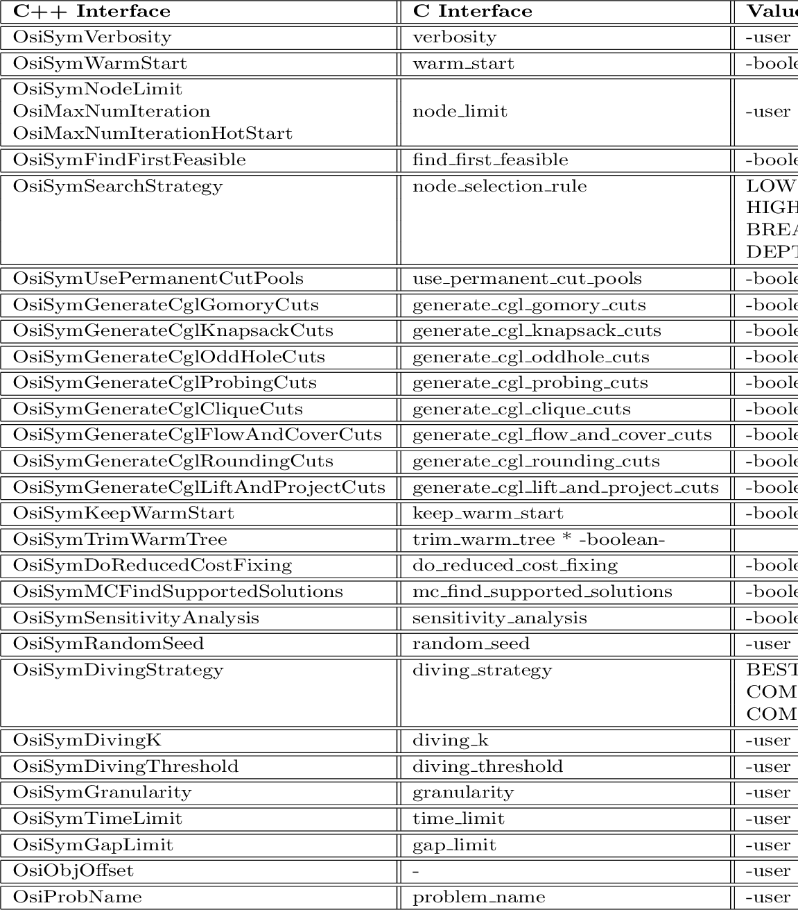

Next: References Up: Run-time Parameters Previous: Cut Pool Parameters Contents
As the implementation of the whole interface, there exists a matching
C interface parameter to each of the C++ Interface/OSI parameter and
the parameter setting functions are designed to set the
corresponding C interface parameter. Thus, we will just give a table of the
parameter names, their C interface complements and the values they can be set
to, rather than their detailed descriptions. For each parameter, the user
can see the C interface complement for further explanation.

However, as it is seen, only some of the C interface parameters have their matches. If the other parameters are required to be modified, the user can always set them directly by their C interface names, using the overlapping functions: setSymParam(string, int), setSymParam(string, double) and setSymParam(string,string). For instance, the verbosity parameter can be set, let's say, to 2 either by setSymParam(OsiSymVerbosity, 2) or by setSymParam(“verbosity”, 2). Note that, this flexibility is also supported for parameter querying functions.